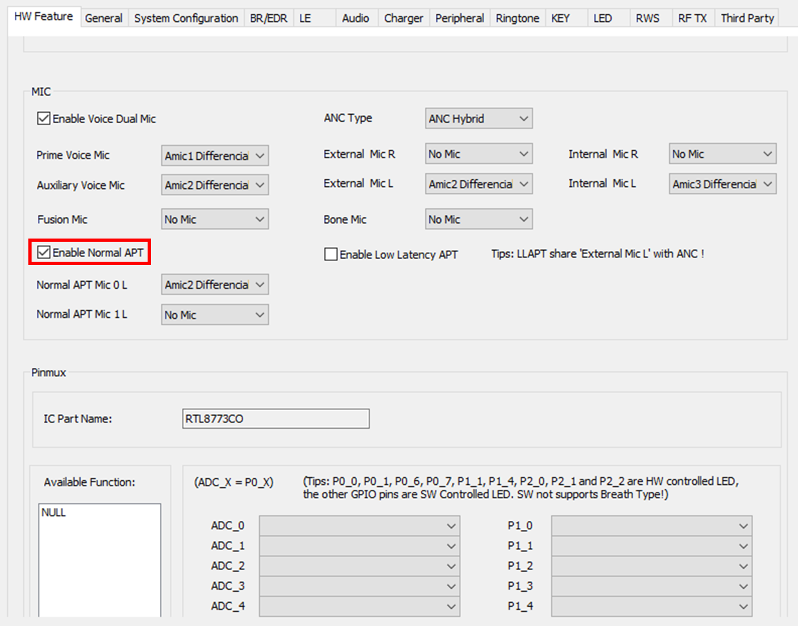
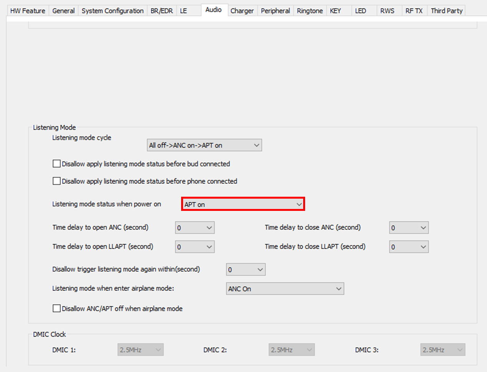
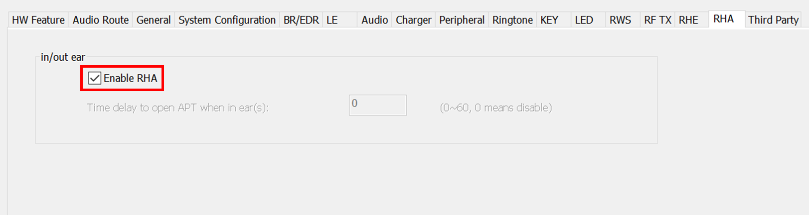
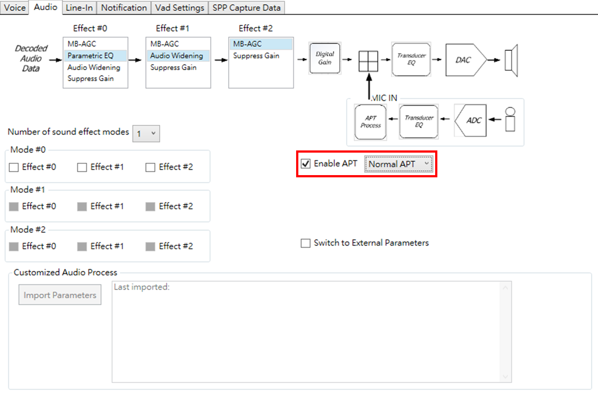
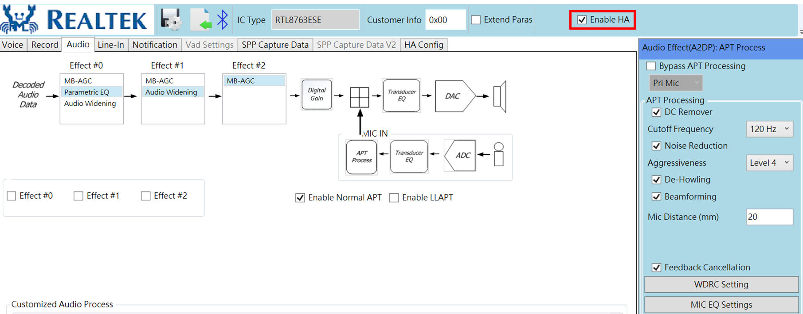

APP HEARABLE Module Application Note
V1.3
2023/07/03
Revision History
| Version | Date | Description |
| V0.0.0.1 | 2021/08/31 | Stable Release |
| V0.0.0.2 | 2022/07/04 | Add vendor effect, program |
| V1.3 | 2023/07/03 | Change version number to 2 digits |
Contents
Table List
Figure List
Glossary
| Terms | Definitions |
| HA | Hearing Aids |
| HA program | A scenario for HA that stores HA effects' parameters, HA UI options |
| HA program effect | A HA effect which a group of paramaters, that is stored in HA program |
1 Introduction
The purpose of this document is to give an overview of the app hearable module for customer. The document describes how to use app hearable module in app project.
1.1 Features
- Apply HA effects
- When the device enter DSP APT / DSP APT + ANC mode it would load HA effect store in the HA progrm that the program idx points to.
- When the device is under DSP APT / DSP APT + ANC mode, and HA effects is adjust on the APP. It would apply HA effectes sent by the APP.
- Switch HA programs
- The device would apply the HA effects stored in the switched HA program.
2 Configuration
To enable HA module. It needs to configure rcfg through McuConfigTool, and configure dsp config through DSPConfigTool.
2.1 MCUConfigTool Configuration
Enable Normal APT in "HW Feature" page.

Figure 2-1 Enable DSP APT in MCUConfig tool
Select Listening mode status when power on option in "Audio" page.

Figure 2-2 Set Power on listening mode in MCUConfig tool
Enable RHA option in "RHA" page.

Figure 2-3 Enable RHA option in MCUConfig tool
2.2 DSPConfigTool Configuration
Enable APT and select Normal APT in "Audio" page.

Figure 2-4 Enable DSP APT in DSPConfig tool
Checked Enable HA option in option bar.

Figure 2-5 Enable RHA option in DSPConfig tool
3 Source Code Overview
The source code consists of APP_HEARABLE part. The details will be described in the following sections.
This section describes app hearable module. The reference file is shown as follows:
- Project source code directory: sdk\src\sample\rws\app_hearable.c
The file contains functions to handle hearable related behavior.
- Project source code directory: sdk\src\sample\rws\app_cmd.c
The file implements functions to handle SPP/BLE commands including commands specified for hearable module.
3.1 Initialize HA module
Initialize HA module including following steps:
- Create HA effect instances.
- Initialize the instance to read / write HA FTL.
- Initialize HA program which store HA effect parameters, program object parameters.
- Initialize HA timer cback for delay open APT, fade in APT volume usage.
- Initialize HA relay cback for rws bud to sync control, data message.
- Initialize HA cmd cback to handle payloads contains HA effect parameters which is sent through CMD_SEND_RAW_PAYLOAD.
- Initialize HA audio cback to apply HA effects when APT on, report audio volume posted by DSP.
- Bind specify cback to call when APT on. The cback which currently used is to load HA program.
void app_ha_init()
{
ha_effect_db = calloc(1, sizeof(T_HA_EFFECT_DB));
ha_effect_db->queue = calloc(1,
sizeof(
T_OS_QUEUE));
ha_prog_db = calloc(1, sizeof(T_HA_PROG_DB));
ha_prog_db->obj_queue = calloc(1,
sizeof(
T_OS_QUEUE));
app_ha_effect_set_scheme();
ha_ext_ftl_storage_init();
app_ha_prog_init();
app_ha_effect_apply_cback_register(app_ha_effect_apply_cback);
}
3.2 Set HA program effect Mechanism
HA program effect can be set from two routes. It can be set from dsp config which contains HA program effect parameters, either can be set from remote peer (ex: AudioConnect APP) through CMD_SEND_RAW_PAYLOAD cmd that can transfer custom HA program effect parameters to specify ear buds.
3.2.1 Set HA program effect through dsp config
When HA version column marked in HA FTL is different from the same column marked in dsp config, then HA FTL would be initialized through preset HA program stored in dsp config. Which HA program effect is set when Initializing HA program.
source code directory: sdk/src/sample/rws/app_hearable.c
bool app_ha_prog_init()
{
...
if (buf[3] != app_ha_version_get())
{
if (app_ha_dsp_prog_is_set())
{
app_ha_dsp_prog_load();
is_init = app_ha_prog_db_load();
}
...
}
...
}
3.2.2 Set HA program effect through remote peer
HA program effect that needs to transfer to ear buds may larger than SPP/BLE MTU size. To handle this situation, the ear bud is expected to handle HA program effect through CMD_SEND_RAW_PAYLOAD. The cmd handler has the compatibility to restore segment data into origin data and send to specify ear bud or both buds.
The HA program effect that needs to transfer to ear buds could be generated by calling APP SDK's rha_lib HA program effect api. The api has implemented the cmd protocol.
The code below shows the flow to handle cmd payload and send to opposite ear bud if needed.
source code directory: sdk/src/sample/rws/app_cmd.c
void app_cmd_handler(uint8_t *cmd_ptr, uint16_t cmd_len, uint8_t cmd_path, uint8_t rx_seqn,
uint8_t app_idx)
{
switch (cmd_id)
{
...
...
{
app_cmd_general_cmd_handle(cmd_ptr, cmd_len, cmd_path, app_idx, ack_pkt);
}
break;
...
}
...
}
source code directory: sdk/src/sample/rws/app_cmd.c
static void app_cmd_general_cmd_handle(uint8_t *cmd_ptr, uint16_t cmd_len, uint8_t cmd_path, uint8_t app_idx, uint8_t *ack_pkt)
{
switch (cmd_id)
{
...
{
...
if (cmd_len - 2 < 6)
{
}
{
}
else
{
{
cmd_ptr + 2, cmd_len - 2);
}
{
ack_pkt[2] = app_cmd_compose_payload(cmd_ptr + 2, cmd_len - 2);
}
}
}
break;
...
}
}
Restored cmd payload that contains HA program effect would be distribute to app_ha_cmd_cback() that is binded with APP_CMD_MODULE_TYPE_HA.
source code directory: sdk/src/sample/rws/app_cmd.h
source code directory: sdk/src/sample/rws/app_cmd.c
static bool app_cmd_compose_payload(uint8_t *data, uint16_t data_len)
{
...
{
app_cmd_distribute_payload(buf, total_len);
...
}
...
}
static bool app_cmd_distribute_payload(uint8_t *buf, uint16_t len)
{
...
{
if (p_item->module_type == module_type)
{
p_item->parse_cback(msg_type, buf + 2, len - 2);
return true;
}
p_item = p_item->p_next;
}
return false;
}
The handler would determine the msg type containd in the HA program effect payload then call function to parse HA program effect cmd payload, and apply contained parameters to DSP then write on HA FTL.
source code directory: sdk/src/sample/rws/app_hearable.c
void app_ha_cmd_cback(uint8_t msg_type, uint8_t *buf, uint16_t len)
{
switch (msg_type)
{
case APP_HA_CMD_MSG_SET_EFFECT_CMD:
{
app_ha_handle_effect_payload(buf);
}
break;
default:
break;
}
return;
}
source code directory: sdk/src/sample/rws/app_hearable.c
static void app_ha_handle_effect_payload(uint8_t *buf)
{
...
switch (effect_type)
{
case HA_EFFECT_WDRC:
case HA_EFFECT_NR:
case HA_EFFECT_GRAPHIC_EQ:
case HA_EFFECT_FBC:
case HA_EFFECT_OVP:
case HA_EFFECT_BF:
case HA_EFFECT_WNR:
case HA_EFFECT_INR:
case HA_EFFECT_RNS:
{
...
if (effect_len > 0)
{
app_ha_effect_set((T_APP_HA_EFFECT)effect_type, buf + effect_offset, effect_len);
app_ha_effect_apply((T_APP_HA_EFFECT)effect_type);
app_ha_prog_set_object(ha_prog_db->selectable_prog_idx,
HA_EFFECT_TO_PROG_OBJ(effect_type),
buf + effect_offset);
...
}
}
break;
default:
break;
}
}
3.3 Access HA program Mechanism
The ear bud is expected to be accessed from CMD_HA_ACCESS_PROGRAM. The cmd handler can determine which type of access operaion to be processed by the cmd payload. Peer device (ex: AudioConnect APP) could send CMD_HA_ACCESS_PROGRAM with sub opcode defined in T_APP_HA_PROG_OPCODE to access HA programs data stored in ear bud's HA FTL.
The code below shows the flow to hanlde CMD_HA_ACCESS_PROGRAM and process specify operation according to sub opcode contained in cmd payload.
source code directory: sdk/src/sample/rws/app_cmd.c
void app_handle_cmd_set(uint8_t *cmd_ptr, uint16_t cmd_len, uint8_t cmd_path, uint8_t rx_seqn,
uint8_t app_idx)
{
switch (cmd_id)
{
...
case CMD_HA_ACCESS_PROGRAM:
...
{
{
app_ha_cmd_handle(cmd_ptr, cmd_len, cmd_path, app_idx, ack_pkt);
}
}
break;
...
}
...
}
source code directory: sdk/src/sample/rws/app_hearable.c
typedef enum
{
HA_PROG_OPCODE_GET_NUM = 0x00,
HA_PROG_OPCODE_GET_ID = 0x01,
HA_PROG_OPCODE_SET_ID = 0x02,
HA_PROG_OPCODE_GET_OBJ = 0x03,
HA_PROG_OPCODE_SET_OBJ = 0x04,
HA_PROG_OPCODE_GET_ALL_OBJ = 0x05,
HA_PROG_OPCODE_SET_ALL_OBJ = 0x06,
HA_PROG_OPCODE_RESET_OBJ = 0x07,
HA_PROG_OPCODE_TOTAL = 0x08,
} T_APP_HA_PROG_OPCODE;
void app_ha_cmd_handle(uint8_t *cmd_ptr, uint16_t cmd_len, uint8_t cmd_path, uint8_t app_idx, uint8_t *ack_pkt)
{
...
case CMD_HA_ACCESS_PROGRAM:
{
switch (cmd_ptr[2])
{
case HA_PROG_OPCODE_GET_NUM:
...
case HA_PROG_OPCODE_GET_ID:
...
case HA_PROG_OPCODE_SET_ID:
...
case HA_PROG_OPCODE_GET_OBJ:
...
case HA_PROG_OPCODE_SET_OBJ:
...
case HA_PROG_OPCODE_GET_ALL_OBJ:
...
case HA_PROG_OPCODE_SET_ALL_OBJ:
...
case HA_PROG_OPCODE_RESET_OBJ:
...
}
}
...
}